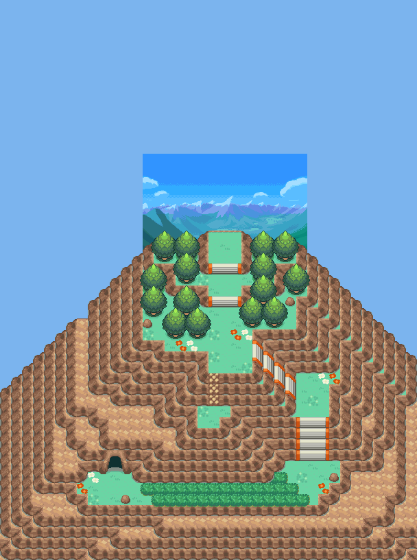

095 波导的勇者
一句话目标：孵化亚玄赠予的蛋、把进化后的路卡利欧带去给亚玄看，并接受他的全力挑战。
接取地点
- 寂静之丘（地图 56:40） 的 (20,31) 的人物 NPC 亚玄（local_id 6）。
- 当前目录描述：孵化亚玄赠予的宝可梦蛋，并将进化后的宝可梦给亚玄看看。
准备条件
- 已从亚玄处获得蛋（在上一任务“亚玄的修炼”收尾、抵达寂静之丘 56:40 时赠予，脚本 0x08EC591F→0x08EC6B25，孵化出利欧路 500）。
- 需把利欧路培养进化成路卡利欧（501）后再来展示。
- 队伍中有空位以便携带展示对象。
操作步骤
- 与寂静之丘 (56:40) 的 (20,31) 亚玄对话。他说“……我可以再拜托你一件事吗？蛋里的宝可梦孵化并且进化以后，你能把它带给我看看吗？”→选“是”出现“接受任务:<波导的勇者>”，他说“真的是太感谢你了！我期待着那一天的到来。”（接取旗标 2767）；选“否”→“这样吗……真是遗憾。”
- 孵化蛋得到利欧路（500），并把它培养进化成路卡利欧（501）。
- 带着路卡利欧回来对话。他问“怎么样了，[玩家/变量]？它已经完成了进化吗？能让我看看现在的样子吗？”→选“是”后从同行队伍中选择要展示的宝可梦。
- 展示判定（按物种检查）： - 展示利欧路（500）：他说“你把它照顾得很好。不过，这孩子现在的波导，就像是一颗正待萌发的种子……尝试和它增进感情吧！我很期待，看到你指引它完成进化的那一天。”——需要继续进化后再来。 - 展示其它宝可梦：“唔……虽然是一只优秀的宝可梦，但这并不是我托付给你的那只吧？” - 展示路卡利欧（501）：他激动确认“没错，就是这股波导……虽然还略显青涩，但却充满无限的可能性！[玩家/变量]，我想确认一件事。既然你们已经建立了如此深的羁绊，是否能接下我全力的挑战？”（置旗标 2768）
- 选“是”接受对战：与亚玄（训练师 349；圈圈熊 Lv34、坚盾剑怪 Lv35、阿勃梭鲁 Lv35、路卡利欧 Lv34 携带超级石）战斗。选“否”他说“我明白了。我和路卡利欧会一直在这等候，直到你们的斗志燃起。”
- 战胜后：亚玄将路卡利欧超级进化的波动储存在你的超级石中（置旗标 2857），并把电话号码登录到精灵齿轮（“把亚玄的电话号码登陆到了精灵齿轮！”）；获得 10 BracerPoints 与 8000$，出现“完成任务:<波导的勇者>”（完成旗标 2769）。
- 完成后再对话，他说“通过与你的对战，那股原本模糊的波导开始变得清晰。如果继续在这里修行下去，我或许就能触及到……那股波导之所在吧！”
交付检查
- 必须向亚玄展示进化后的路卡利欧（501），并接受、战胜他的挑战（完成旗标 2769）。
奖励
- 10 BracerPoints
- 8000$
- 路卡利欧超级进化的能量（存入超级石，置旗标 2857）
- 亚玄的精灵齿轮号码
容易卡住的位置
- 展示对象必须是进化后的路卡利欧（501）；只拿利欧路（500）会被要求继续培养进化。
- 拿别的宝可梦会被识破：“这并非我托付给你的那只”。
- 接受挑战前若选“否”，可反复再来；战斗为 4 只 Lv34–35，对方的卡利欧带超级石。
来源与待补
- 包：
data/quest_packets/095.json。 - 入口 NPC 脚本
0x08EC5BA7；接取0x08EC6081（由0x08EC5D24衔接）；展示检查0x08EC6034；对战与完成0x08EC5D2A。 - 相关宝可梦：利欧路、路卡利欧；相关训练师：0349 亚玄。
- 未定位：蛋的赠予脚本不在本包（在 094 收尾的 56:40 地图脚本 0x08EC591F→0x08EC6B25）；
special2(0x800D,24)为选中宝可梦的物种检查，展示选择界面返回后0x800C==7分支的语义未定位。
地点地图
共享RGB底图；点击可缩放定位。数字对应本页相关地点，不代表地图上全部事件。
寂静之丘

1 波导的勇者（20,31）